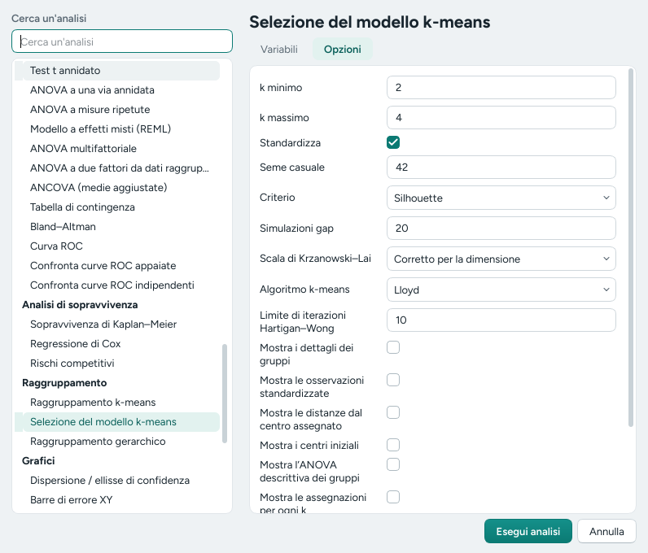
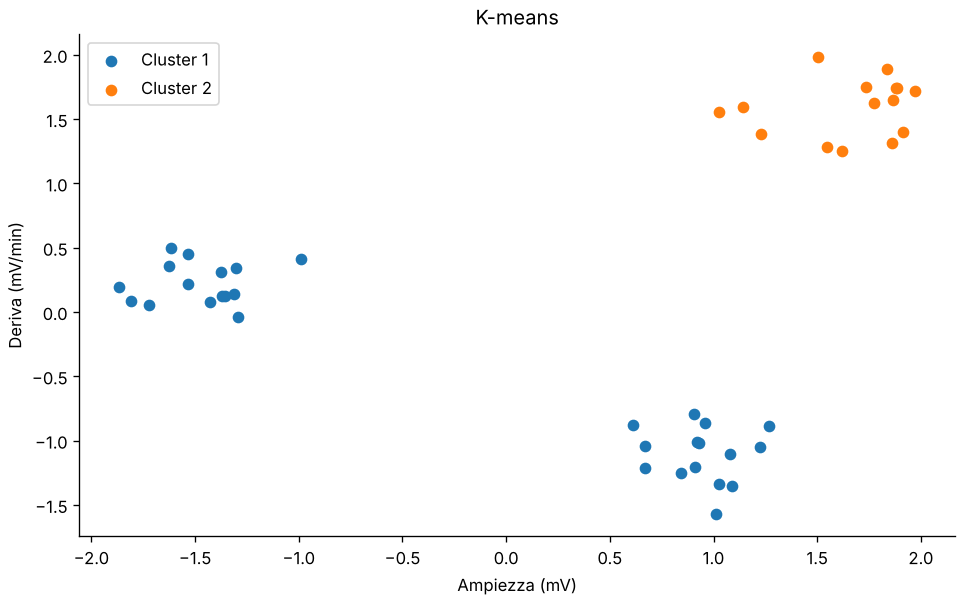
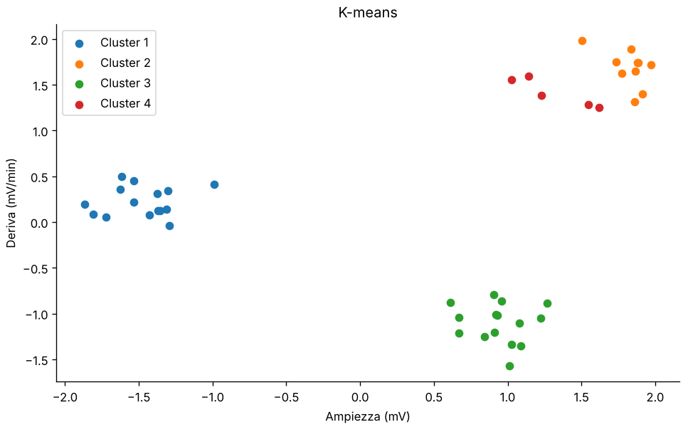
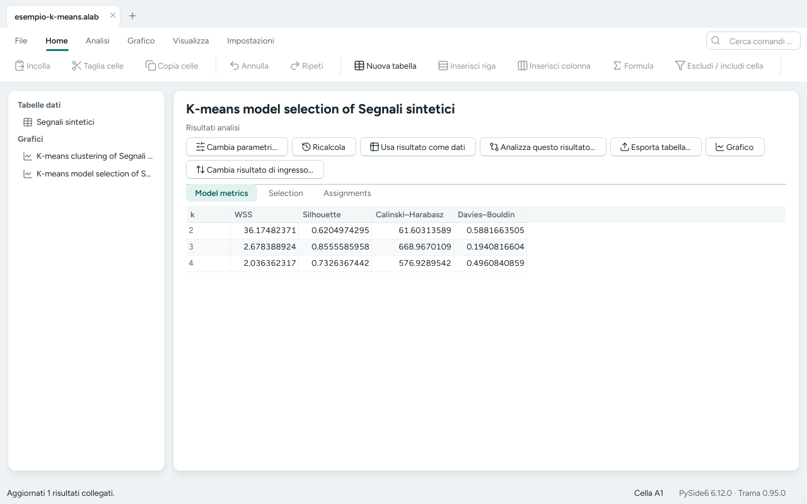
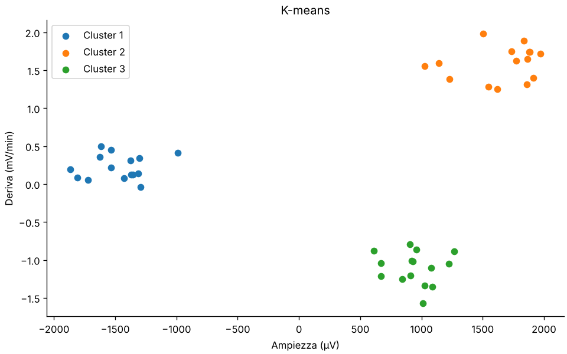

GuidaStatisticaK-means
Scegliere il numero di gruppi con K-means
Hai misurato ampiezza e deriva di 45 segnali e sospetti che appartengano a poche famiglie. Quanti gruppi sostengono davvero i dati, e quanto puoi fidarti della risposta?
- Verificato Trama 0.95.0 beta
- Dati 45 segnali sintetici
- Seme 42
- Lettura 7 minuti
Quando usarlo
K-means assegna ogni osservazione a uno di k gruppi e sposta i centri finché la somma dei quadrati delle distanze dal proprio centro, la WSS, non scende più. Funziona bene con misure numeriche e gruppi compatti, di forma e dimensione simili.
Prima di leggere i gruppi controlla tre cose, perché ognuna può cambiare la risposta:
- La scala delle variabili. Le distanze sommano le variabili così come sono: quella con i numeri più grandi comanda. Con unità diverse attiva Standardizza. Il caso limite più sotto mostra che cosa succede altrimenti.
- I valori anomali. Un punto molto lontano può prendersi un gruppo tutto suo.
- L’inizializzazione. In Trama l’algoritmo di Lloyd parte 10 volte da centri scelti con k-means++ e tiene la soluzione con la WSS più bassa. Il Seme casuale rende ripetibile la sequenza.
K-means restituisce sempre k gruppi, anche quando nei dati non ce ne sono. Il confronto fra più valori di k serve proprio a capire se la struttura c’è.
I dati
Una tabella Variabili multiple con una riga per segnale e due colonne numeriche: Ampiezza (mV) e Deriva (mV/min). Nessun valore mancante. Se una riga ha un vuoto in una delle variabili scelte, Trama la esclude dal calcolo.
| Ampiezza (mV) | Deriva (mV/min) |
|---|---|
| −1,5351 | 0,4488 |
| −1,3544 | 0,1264 |
| −1,2954 | −0,0400 |
| … 42 righe in più | |
In Trama
- Apri il progetto con File → Apri…, oppure porta il CSV con File → Importa nel progetto….
- Seleziona la tabella Segnali sintetici e scegli Analisi → Analizza… (Ctrl+Maiusc+A).
- Nell’elenco delle analisi apri Raggruppamento → Selezione del modello k-means. Nella scheda Variabili spunta entrambe le colonne.
- Nella scheda Opzioni imposta i valori della tabella qui sotto e premi Esegui analisi.
- Per vedere la partizione ripeti con Raggruppamento k-means, 3 gruppi, stesse variabili, scala e seme. Nel progetto allegato le due analisi sono già pronte.
| k minimo · k massimo | 2 · 4 |
|---|---|
| Standardizza | attivo |
| Seme casuale | 42 |
| Criterio | Silhouette |
| Algoritmo k-means | Lloyd (predefinito) |
Mostra la schermata della scheda Opzioni

Leggi il risultato
Le metriche sono nella scheda Model metrics dei risultati e la scelta nella scheda Selection, alla riga Suggested k. Nella 0.95.0 i nomi di queste schede restano in inglese anche con l’interfaccia italiana.





| k | WSS | Rispetto a k − 1 | Silhouette media |
|---|---|---|---|
| 2 | 36,17 | −58,9 % | |
| 3 | 2,68 | −92,6 % | |
| 4 | 2,04 | −24,0 % |
Con un solo gruppo la WSS vale 88,00: con due variabili standardizzate e 45 righe è 2 × 44. I valori a piena precisione sono nel JSON di prova.
Da due a tre gruppi la WSS crolla da 36,17 a 2,68: il terzo centro separa due famiglie che con k = 2 restavano unite. Da tre a quattro scende solo a 2,04 e la silhouette media cala da 0,856 a 0,733, perché il quarto centro taglia in due una famiglia compatta. Su questi dati Trama suggerisce k = 3.
La silhouette di un segnale confronta a, la distanza media dagli altri membri del suo gruppo, con b, la distanza media dai membri del gruppo vicino più prossimo: s = (b − a) / max(a, b). Va da −1 a 1. Una media vicina a 1 indica gruppi compatti e ben separati. Trama la calcola sulle stesse variabili standardizzate usate per il fit.
Mostra la schermata della tabella Model metrics

L’unità di misura decide al posto tuo
Esprimi l’ampiezza in µV invece che in mV, cioè con numeri mille volte più grandi, e disattiva Standardizza. Le distanze dipendono quasi solo dall’ampiezza. La silhouette suggerisce 2 gruppi (0,844 contro 0,787 con k = 3). Con k = 3, tre segnali della famiglia in alto a destra finiscono insieme a quelli in basso a destra, che hanno ampiezza simile ma deriva opposta.



Come accorgersene. La scelta di k cambia quando cambi unità; i gruppi sono tagliati lungo un solo asse; le colonne hanno intervalli di ordini di grandezza diversi. Con Standardizza attivo i risultati tornano identici a quelli in mV.
Cosa riportare
- Variabili e unità, righe escluse e gestione dei mancanti.
- Standardizzazione, algoritmo e numero di inizializzazioni, seme.
- Intervallo di k provato, criterio di scelta e valore ottenuto.
- Versione di Trama e progetto
.alabche ripete il calcolo.
Ampiezza e deriva sono state standardizzate e raggruppate con K-means (algoritmo di Lloyd, 10 inizializzazioni k-means++, seme 42) per k da 2 a 4 in Trama 0.95.0 beta. La silhouette media è massima con k = 3 (0,856, contro 0,620 con k = 2 e 0,733 con k = 4).
Una partizione esplorativa non è una classificazione. Prima di usare i gruppi per assegnare nuovi campioni cerca un riscontro indipendente: un’altra serie di misure, una variabile non usata nel raggruppamento, un altro metodo.
Fonti
- Lloyd S. P. (1982). Least squares quantization in PCM. IEEE Transactions on Information Theory, 28(2), 129–137. doi:10.1109/TIT.1982.1056489
- Arthur D., Vassilvitskii S. (2007). k-means++: the advantages of careful seeding. Proceedings of the 18th ACM-SIAM Symposium on Discrete Algorithms, 1027–1035. ACM Digital Library
- Rousseeuw P. J. (1987). Silhouettes: a graphical aid to the interpretation and validation of cluster analysis. Journal of Computational and Applied Mathematics, 20, 53–65. doi:10.1016/0377-0427(87)90125-7
- Tibshirani R., Walther G., Hastie T. (2001). Estimating the number of clusters in a data set via the gap statistic. Journal of the Royal Statistical Society B, 63(2), 411–423. doi:10.1111/1467-9868.00293
Verificato con Trama 0.95.0 beta (tag v0.95.0, commit 4c07db6) il 20 novembre 2026. Calcolo in analisi/stats.py e analisi/advanced.py.